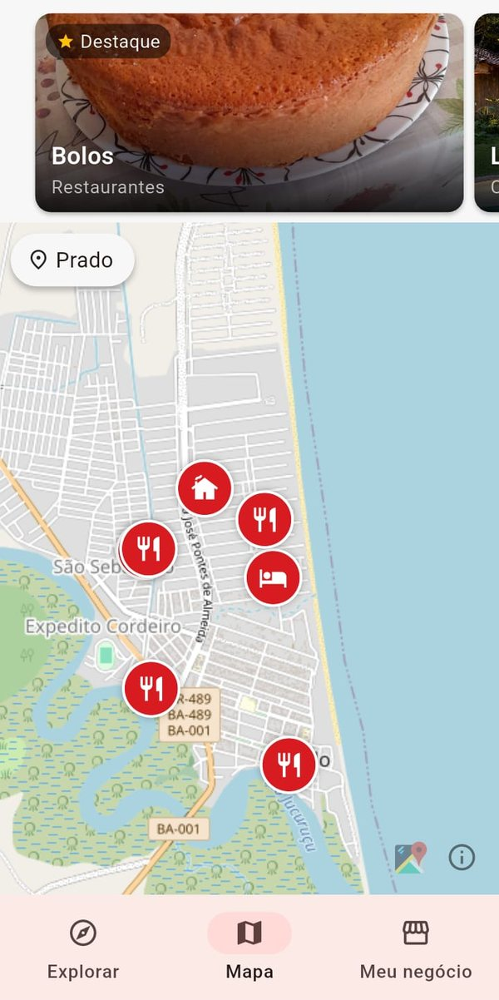

Descubra o que há de bom perto de você.
Restaurantes, pousadas, casas de temporada, passeios e comércio da cidade, tudo em um mapa. Veja fotos, preços e fale direto com quem atende.
Grátis · Android e iPhone

O nome
em Xipaya, perto
É essa a ideia do app: aproximar quem chega e quem mora de quem faz a cidade acontecer, o restaurante da esquina, a pousada do bairro, o passeio com o barqueiro da região.
O que você encontra
A cidade inteira em um só lugar.
Como funciona
Três passos até o lugar certo.
Abra o mapa
Veja os negócios da cidade nos seus pontos reais e os destaques do dia no topo da tela.
Conheça o lugar
Fotos, descrição, avaliações, promoções e cardápio ou catálogo. Nas casas de temporada, filtre por quantas pessoas vão.
Fale e vá até lá
Chame no WhatsApp, abra a rota e combine direto com quem atende. Sem intermediário e sem comissão.
Para quem tem um negócio
Seja encontrado por quem está por perto.
Restaurante, pousada, casa de temporada, passeio, loja ou serviço: cadastre o seu e apareça para moradores e turistas.
O cadastro é grátis e passa por uma análise rápida antes de aparecer.
Seu lugar no mapa
Fotos, endereço, horários, WhatsApp e Instagram em uma página só sua.
Vitrine de produtos
Cardápio, acomodações ou produtos com preço e foto. Para casas de temporada: capacidade, comodidades, regras e distância da praia.
Promoções e avaliações
Divulgue cupons e receba notas de quem já foi. Compartilhe sua página com um toque.
Números do seu negócio
Veja quantas pessoas visitaram, chamaram no WhatsApp e pediram rota.
Destaque (opcional)
Apareça no carrossel do topo do mapa e amplie sua vitrine por um período.
Baixe grátis
Leve o Kapon no bolso.
Escolha o seu aparelho. Nos dois, o app é gratuito.
No iPhone, deixe o Kapon na tela inicial
- Abra app.kapon.com.br no Safari.
- Toque em Compartilhar (o quadrado com a seta para cima).
- Escolha Adicionar à Tela de Início e toque em Adicionar.
Pronto: o ícone do Kapon aparece junto dos seus apps e abre em tela cheia.
Dúvidas
Perguntas frequentes
O Kapon é gratuito?
Sim. Baixar e usar é grátis, e o cadastro de negócios também. O Kapon não cobra comissão sobre o que você vende. Há um plano de destaque opcional, para quem quer aparecer no carrossel do mapa.
O que quer dizer “Kapon”?
Kapon significa “perto” na língua Xipaya. O nome resume o app: mostrar o que está por perto.
Como falo com o negócio?
Pela página do negócio, no botão de WhatsApp. A conversa e o combinado, de pagamento a reserva, são direto entre você e quem atende.
Como cadastro o meu negócio?
Baixe o app, entre na aba “Meu negócio”, preencha as informações e envie fotos. Depois de uma análise rápida, ele passa a aparecer no mapa.
Em quais cidades funciona?
Começamos pelo Prado, na Bahia, e estamos abrindo novas cidades. Se a sua ainda não está na lista, cadastre o seu negócio quando ela chegar ou fale com a gente.
Funciona no iPhone?
Sim. Abra app.kapon.com.br no Safari e use “Adicionar à Tela de Início”: o Kapon fica com ícone próprio e abre em tela cheia. Em breve, também na App Store.